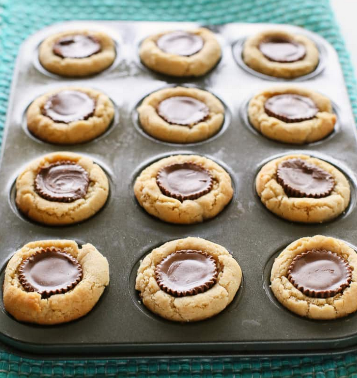

Peanut Butter Cup Cookies

Peanutbutter......i kneel
Ingredients:
- 1 3/4 cups all-purpose flour
- 1/2 teaspoon salt
- 1 teaspoon baking soda
- 1/2 cup butter, softened
- 1/2 cup white sugar
- 1/2 cup peanut butter (JIF!!!)
- 1/2 cup packed brown sugar
- 1 egg, beaten
- 1 teaspoon vanilla extract
- 2 tablespoons milk
- about 30-40 miniature Reese's butter cups, unwrapped
Directions:
- Preheat oven to 375 degrees F (190 degrees C).
Whisk together the flour, salt and baking soda in a medium bowl; set aside.
- Cream together the butter, sugar, peanut butter and brown sugar until fluffy.
Beat in the egg, vanilla and milk. Add the flour mixture; mix well.
Shape into 1 inch balls and place each into a greased mini
muffin tin (or use paper liners).
- Bake at 375 degrees for about 8 minutes. Do not overbake! Remove from oven and immediately
press a mini peanut butter cup into each ball. Cool and carefully remove from pan.
Link to recipe